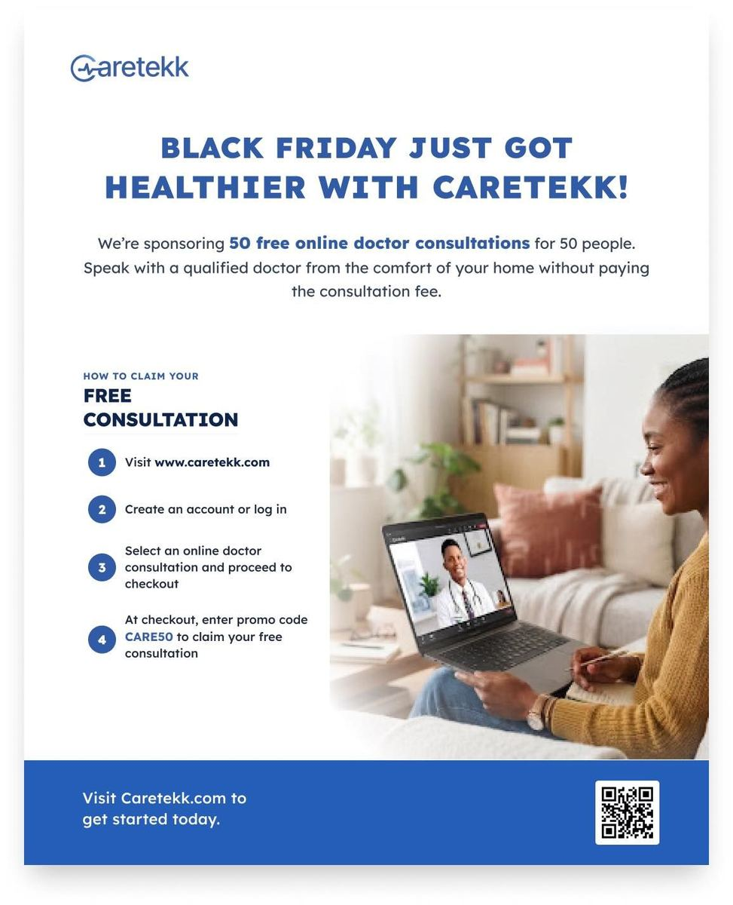
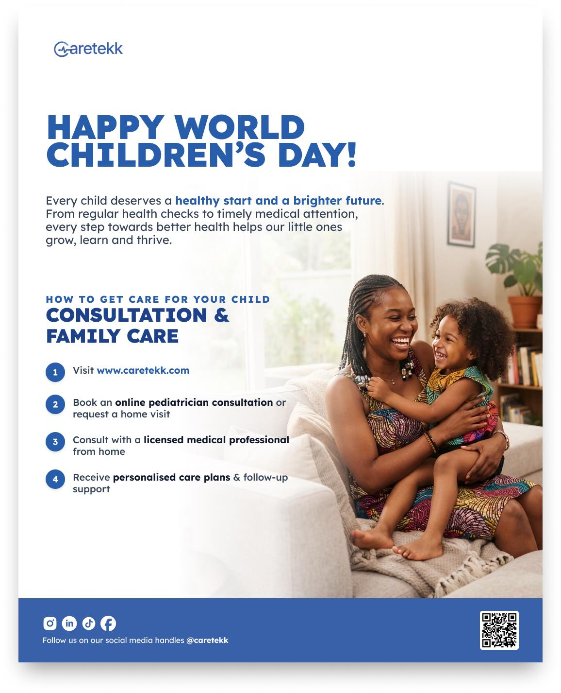
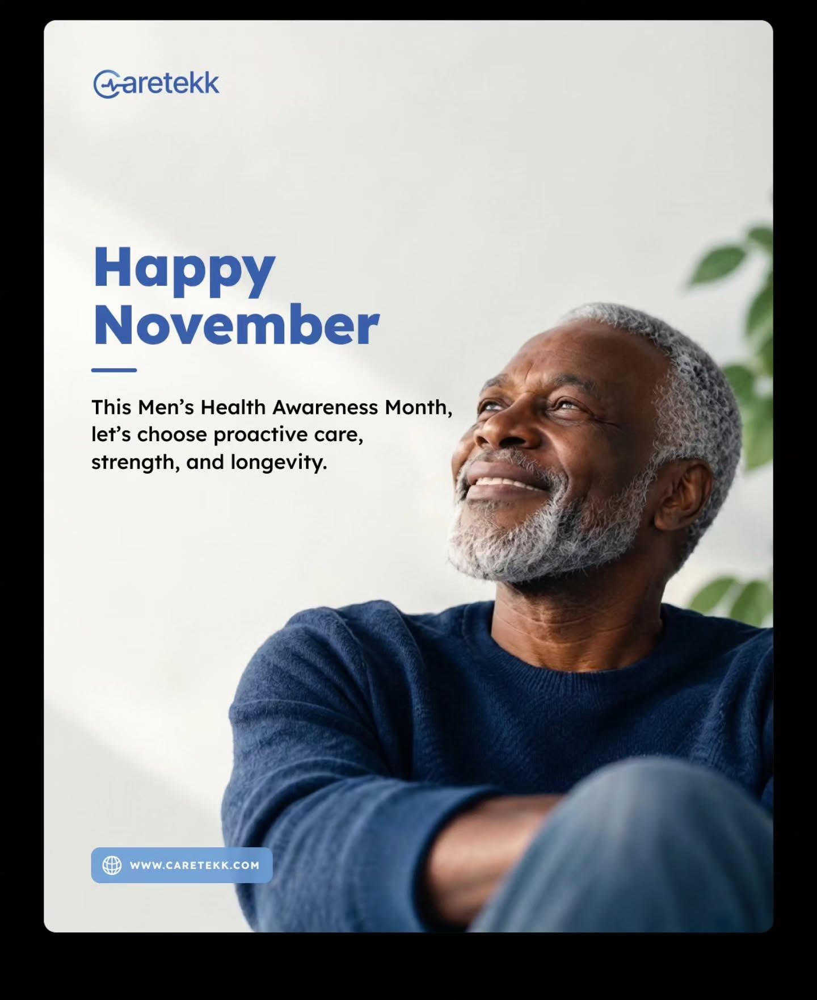
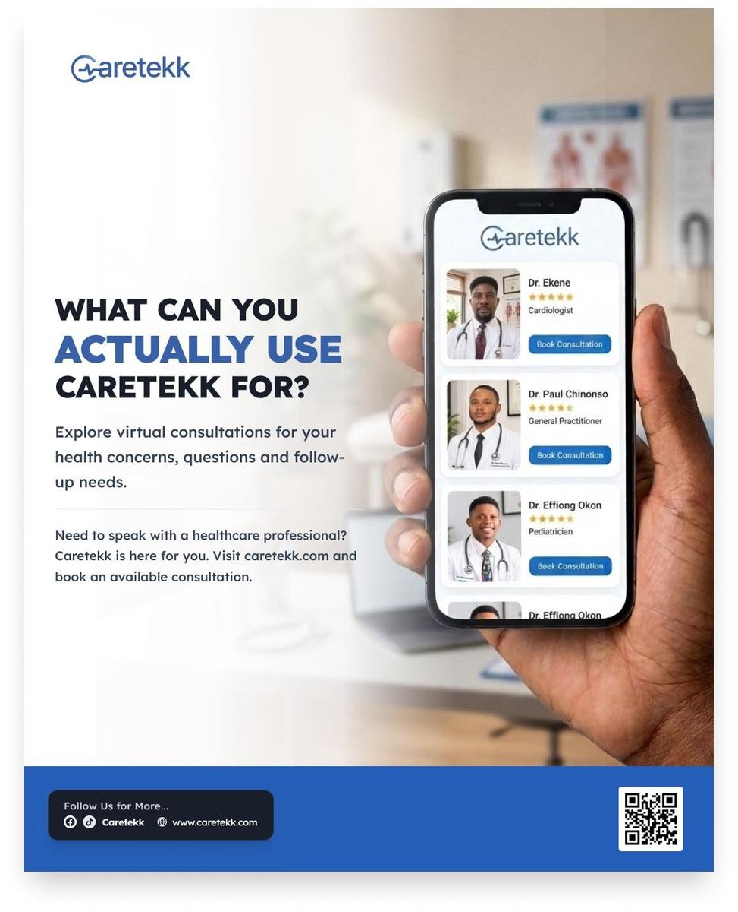

‘Whether you’re a busy professional, an entrepreneur, a parent juggling responsibilities or someone who’s been putting off a health concern, this is your opportunity to prioritise your wellbeing.’
Visit caretekk.com, choose an online consultation, enter CARE50Caretekk
Health
Health awareness for a Nigerian telehealth and home-care platform. The posts had to make someone take a symptom seriously before they scrolled past.


- Role
- Content design · Campaign art direction · Health communication
- Tools
- Figma · Illustrator · Instagram
- Scope
- 10 posts, 3 global health days, one brand system
- Status
- Live and ongoing
01 · The brief
The hardest part isn’t booking.
Caretekk connects people to doctors and home nurses. The drop-off happens earlier than the booking flow, at the point where someone decides their joint pain or the check-up they keep postponing is not worth mentioning.
So these are not adverts in the usual sense. Each post has to earn attention with a symptom the reader already recognises, then hand over one clear action. I designed the visual system the campaign runs on.
02 · The system
Health communication, not decoration.
Every post carries the same skeleton: the Caretekk mark top left, one bold headline in the brand blue, a short body, then a single route out: either a URL or a QR code.
Blue carries the accent everywhere. Nothing competes with it, which matters on a feed where a health message loses credibility the moment it looks thrown together.
The layouts repeat without feeling repeated because the content changes shape. Numbered steps for an offer, a six-point symptom map for menopause, a checklist for arthritis.
03 · Education
Teach the symptom, not the product.
World Arthritis Day ran on the line ‘Joint Pain? It’s not just old age’, followed by four signs worth getting checked and an instruction that does the distribution for you: save this and share it with someone who says ‘it’s just age’.
World Menopause Day mapped six symptoms onto one photograph, from fatigue and sleep disruption through to brain fog, so a woman reading it at midnight could put a name to what she was feeling. World Children’s Day turned the frame onto parents, with consultations and follow-up support presented as proactive care.
None of them sell a consultation in the first line. The product arrives after the reader has recognised themselves, which is why the posts get saved.
04 · Campaign
One offer, three audiences.
For Black Friday, Caretekk offered fifty free online doctor consultations. Instead of one announcement, the offer ran across three posts, each written for a different person with a different reason not to act. The main frame carried the four steps to claim it and finished on a QR code.
‘You’ve got enough on your plate. Seeing a doctor shouldn’t be another struggle. That health concern you’ve been ignoring, or the follow-up you’ve been postponing, is worth attention now.’
Fifty free online consultations for eligible individuals‘When last did Mum or Dad have a proper conversation with a doctor? This Black Friday, give them something that truly matters: access to professional healthcare.’
The same code, aimed at the person who books for someone elseOne offer, three entry points, and the same frame around all of them. It is the case for designing a system rather than a set of posts.
05 · Objections
Answering the reason not to bother.
Two reels handle the objection the stills cannot: time. One opens on traffic and waiting rooms, the other on parents at home while you get on with your day. Both land on the same promise: a licensed doctor without leaving the house.
The plainest post in the set is a list of three reasons someone might need a doctor: a symptom you do not understand, a medication question you have put off, a follow-up to discuss. No flourish. It is the one that gets forwarded most.
That is the distribution plan across the whole campaign. Design that gets sent to the person who needs it, rather than content that collects likes and changes nothing.






Next project
Khan Terminal Interview Academy ↗